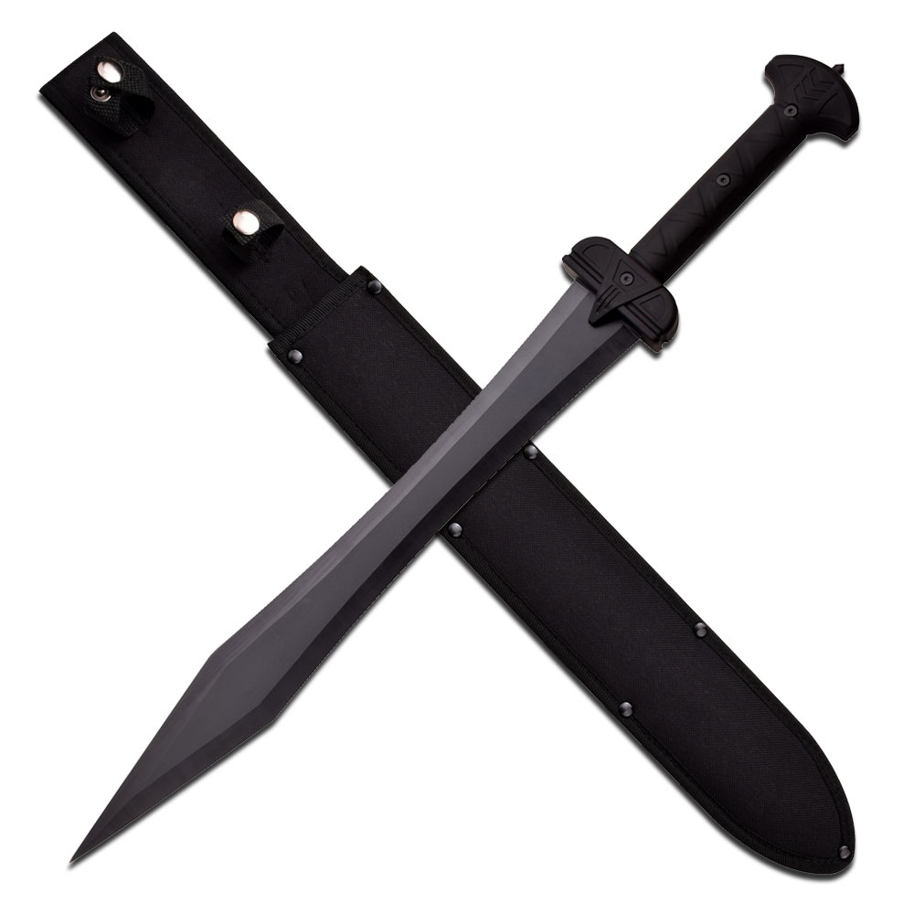

Gládio
Gládio é uma espada curta utilizada na Antiguidade, que os autores latinos chamavam ense (em latim: ensis).
É o mais antigo tipo de espada curta de lâmina recta de dois gumes conhecida. Caracteriza-se pela sua lâmina, tradicionalmente, bastante larga e quase da mesma largura do punho à ponta.
Na Idade do bronze eram inigualáveis e na Idade do ferro mantiveram a primazia, em relação a outros tipos de armas alternativas.
Na Grécia Antiga era tratado como uma arma de último recurso, ao passo que na Roma Antiga assumiu o papel de arma principal, logo depois do pilo, que era uma arma de arremesso. Tanto os hoplitas gregos, como os legionários usavam-no do lado esquerdo, de modo a mais facilmente o poderem sacar da bainha, passando a mão direita à frente do corpo, para segurar o cabo com o polegar próximo à lâmina.
Com o advento da Idade Média a cavalaria de guerra foi adquirindo cada vez maior destaque, em relação à infantaria, dando-se, por conseguinte, um declínio da popularidade das espadas curtas, por sinal relegadas às mãos da plebe, que não raras vezes privilegia outro tipo de armamento com características mais semelhantes a alfaias agrícolas (como as armas de haste), face às espadas longas (vulgo espadas).
Depois do século XIX, foram substituídas por terçados ou sabres de infantaria, e mais tarde por por baionetas e facas de combate, as quais ainda são utilizadas nos dias de hoje.

Espata/Spatha
Espata era um tipo de arma romana com lâmina de gumes rectos, medindo entre 0,5 e 1 m, com um punho de comprimento entre 18 e 20 cm, em uso nos territórios do Império Romano durante os séculos I a VI EC. Espadas mais recentes, dos séculos VII a X, como as espadas víquingues, são derivadas reconhecidas e algumas vezes são também chamadas de espata.
A espata romana era usada em guerra e em lutas de gladiadores. Da literatura aparece no Império Romano no século I como arma usada presumivelmente por auxiliares celtas e gradualmente se tornou a arma padrão da infantaria pesada, substituindo o gládio nas linhas do fronte, dando à infantaria mais alcance quando estocando. Enquanto as versões da infantaria tinham uma ponta alongada, as versões carregadas pela cavalaria possuíam uma ponta arredondada para evitar espetar acidentalmente o pé do próprio cavaleiro ou o cavalo.
Muitos exemplares da espata foram encontradas na Bretanha e Alemanha. Foi usada extensivamente por guerreiros germânicos. Não está claro se ele veio do gládio de Pompeia ou as espadas célticas, mais longas, ou se ele serviu de modelo para as várias espadas de cavaleiros e espadas de víquingues da Europa. A espata continuou popular durante o Período de Migração. Ela evoluiu para a espada de cavalaria da Alta Idade Média no século XII.